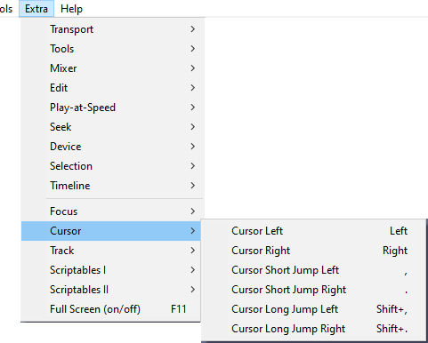

Extra Menu: Cursor
- 
Cursor Left Left
When not playing audio, moves the editing cursor one screen pixel to left. When a Snap option is chosen, moves the cursor to the preceding unit of time as determined by the current selection format. If the key is held down, the cursor speed depends on the length of the tracks.
When there is a selection, moves the cursor to the beginning of the selection, removes the selection, and scrolls the track to display the cursor (if needed).
When playing audio, moves the playback cursor as described at "Cursor Short Jump Left" (below).
Cursor Right Right
When not playing audio, moves the editing cursor one screen pixel to right. When a Snap option is chosen, moves the cursor to the following unit of time as determined by the current selection format. If the key is held down, the cursor speed depends on the length of the tracks.
When there is a selection, moves the cursor to the end of the selection, removes the selection, and scrolls the track to display the cursor (if needed).
When playing audio, moves the playback cursor as described at "Cursor Short Jump Right" (below).
Cursor Short Jump Left ,
When not playing audio, moves the editing cursor one second left by default. When playing audio, moves the playback cursor one second left by default. The default value can be changed by adjusting the "Short Period" under "Seek Time when playing" in Playback Preferences.
Cursor Short Jump Right .
When not playing audio, moves the editing cursor one second right by default. When playing audio, moves the playback cursor one second right by default. The default value can be changed by adjusting the "Short Period" under "Seek Time when playing" in Playback Preferences.
Cursor Long Jump Left Shift + ,
When not playing audio, moves the editing cursor 15 seconds left by default. When playing audio, moves the playback cursor 15 seconds left by default. The default value can be changed by adjusting the "Long Period" under "Seek Time when playing" in Playback Preferences.
Cursor Long Jump Right Shift + .
When not playing audio, moves the editing cursor 15 seconds right by default. When playing audio, moves the playback cursor 15 seconds right by default. The default value can be changed by adjusting the "Long Period" under "Seek Time when playing" in Playback Preferences.